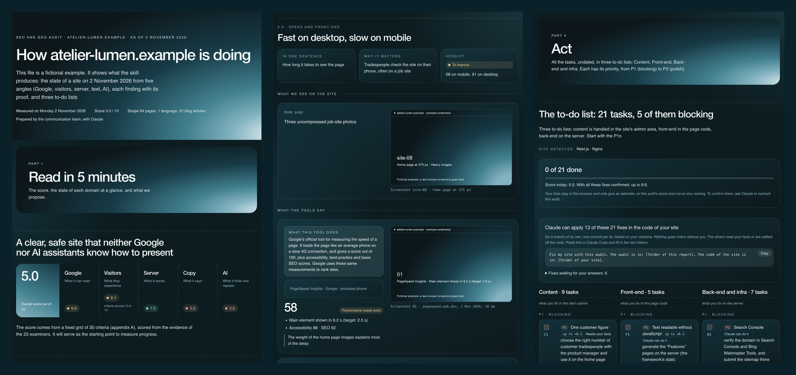

Claude skill · open source · MIT
It tells you what AI assistants really answer about your site, fixes your code, then checks it holds. A Claude skill with the same grid at every audit, proof for every finding, and no extra key or paid service.
Most audits stop at a list. This one carries on, and keeps you in charge of what goes online.
Give it the folder of your site. It works on a branch of its own, one commit per fix, tests the site on your machine, and stops if something that worked got worse.
Legal names, figures, clients: the report gives you the questions, and a form to fill in and paste. Secrets and invented facts are refused.
You read the branch and publish. Claude then reads the live site again and marks each fix: fixed, better, or not yet.
Start with a first look, and take the full audit when you need evidence to present and a score to track. Reports come in English or French.
Most audits look at one thing with one tool. This one crosses five angles, and each angle has its evidence.
robots.txt, sitemap, redirects, fake 404s, canonicals, hreflang, and above all: is the text there without JavaScript?
Core Web Vitals, a phone at 375 px, WCAG accessibility, call to action, form, proof of trust.
Response time, compression, cache, TLS, security headers, trackers before consent.
Titles, descriptions, share previews, typos, and the same facts everywhere: a contradictory figure gets repeated by Google and AI.
Fixed questions really asked to ChatGPT, Google AI Mode, Brave and Perplexity. Who gets cited instead of you, and which wrong facts circulate.
Each finding is verified, a hypothesis or not verifiable. A real screenshot with a red box, or a link. No ranking promise.
One command compares two audits of a site. The score only counts the criteria checked both times, tools follow noise thresholds, and an AI citation counts if it comes back at least 2 times out of 3. A task that left the list is "no longer listed", not "done".
6 categories, 5 criteria each, scored 0, 1 or 2. Same tools, same settings, same questions at each audit: when the score moves, the site moved, not the method. A criterion that cannot be verified is excluded, never guessed, and the script refuses a report whose scores do not match the criteria.
| Category | What it looks at | |
|---|---|---|
| A | Crawling and indexing | robot access, one version of the site, HTTP codes, rendering without JavaScript, structure |
| B | Performance and front-end | real LCP, INP, CLS, mobile PageSpeed, images, JavaScript and CSS, mobile |
| C | Server, security and privacy | TLS and HSTS, security headers, compression and cache, response time, consent |
| D | Content and editorial SEO | titles, descriptions and sharing, structure, depth, accuracy of facts, freshness and languages |
| E | Experience, accessibility and conversion | the first 5 seconds, call to action, form, proof, WCAG |
| F | GEO and authority | structured data, AI crawlers and llms.txt, entity, citable content, presence in answers |
Each problem becomes a precise task, with its fix and a "Verified when..." check anyone can repeat. It goes in the list of the person who can do it.
Each task says where to act and what to paste for the platform of the site, shows the page before and after, and comes with ready files: security headers, llms.txt, structured data, titles. They are drafts to read, and nothing is ever applied to the site.
The full audit starts from one file, audit.json. The scripts turn it into an HTML report in five parts, its PDF, a single page to send by email, the to-do as Markdown and CSV, and a PowerPoint of about a hundred slides in the brand's colours.

Activity, audience, goal, CMS. Nothing to ask again next time.
Crawl in the background, 19 tools, the AI panel, the screenshots.
30 criteria with their evidence, 9 domains, the tasks.
HTML, PDF, single page, PowerPoint, to-do. Checked before delivery.
The same protocol in 1, 3 or 6 months, with noise thresholds.
For the quick audit, Claude Code and Python 3.9 or later are enough, with no browser and no API key. The full audit also needs a browser driven by Claude, and Node.js for the PowerPoint.
# in Claude Code: /plugin marketplace add Tania-bezancon/audit-seo-geo /plugin install audit-seo-geo@tania-bezancon # then, or just ask in your own words: /audit-seo-geo:audit-seo-geo quick https://www.your-site.com # 15 minutes /audit-seo-geo:audit-seo-geo full https://www.your-site.com # a working day
It promises no ranking. It measures, sorts, and says what to fix. Positions and AI citations also depend on others.
It does not replace Search Console. Without access, it says so in the limits and makes it a P1 task.
It never publishes for you. An audit changes nothing. Your code changes only if you ask, on a branch, and you decide what goes online. It fills in no form and ticks no "I am human" box.